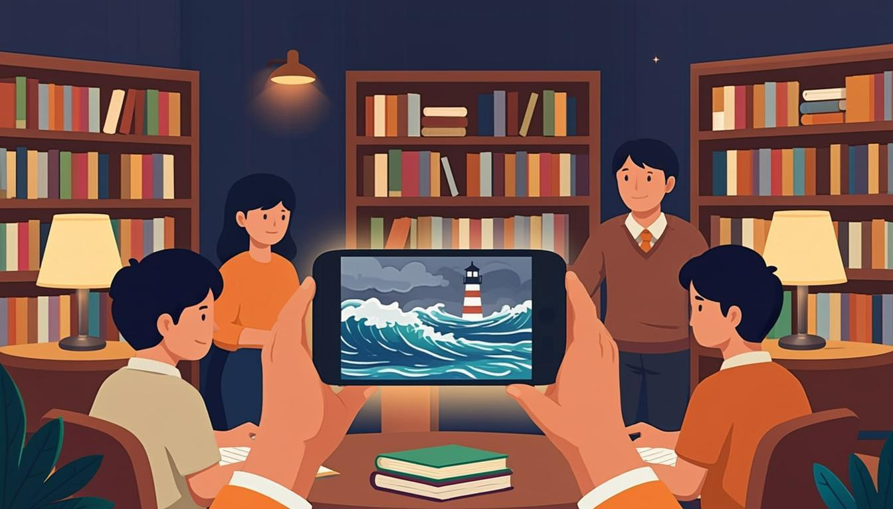

Warm-up
10 minbig ideas · games for good🎧 Listen to the questions
❓ Three questions — click a card to open the sentence starters
Listening — The Game That Taught a City
12 minaudio + comprehension
🧩 Before you listen: 10 key words
Click a word — a definition and an example will open. The Russian gloss is there to check your understanding. Listen to the recording of all ten words.
🎧 Track 1 — The Game That Taught a City
🌍 Extension — TED: Jane McGonigal, Gaming can make a better world
From the yearly plan: ted.com — Gaming can make a better world ↗ (19:46)
Watch the first 10 minutes with subtitles off. Retell her main argument in 4 sentences using narrative tenses — and find her term for a victory you can barely imagine: an epic win.
Reading — Interview with a Serious Games Designer
8 mintext + tense spotting“Players Had Ignored Lectures for Years” — an interview with Aino Aalto
The Guardian: Your library game became a local phenomenon. How did it start?
Aino: While I was volunteering at the library, I saw the problem every day: teenagers walked past the lecture posters without stopping. The library had already tried everything — new books, free wifi, coffee. Nothing worked. One evening I watched my little brother fail a school safety drill and then spend three hours mastering a boss fight. That was the moment the idea arrived.
So games beat lectures?
Aino: It is not about beating anything. Games simply give you agency — you decide, you act, you see the result. In our storm game, players were solving evacuation puzzles while the clock was ticking, and every mistake had a visible consequence. By the end of the first month, two thousand teenagers had played it — and the library had doubled its young visitors. The storm was fictional; the skills were real.
🌍 Extension — The Guardian: Games
From the yearly plan — choose an interview with a developer: theguardian.com/games ↗
Note how the journalist mixes tenses and mark one example each of Simple / Continuous / Perfect.
Grammar — Narrative Tenses Together
15 minrules + 4 exercisesTHE STORY FORMULA — four tenses, one story
- 1 · Setting (the scene): was doing — The library was losing visitors.
- 2 · Incident (the events): did — Then a designer had an idea. They launched the game.
- 3 · Backstory (the earlier past): had done — She had volunteered there for a year.
- 4 · Resolution (the result): past or present — Visits had doubled — and they are still growing.
SWITCHING BETWEEN FLOORS — the traps
- Don't overuse the Perfect: chronological events stay Simple. She had an idea, and the library launched the game.
- Continuous = camera pan, not the plot: Players were solving puzzles while the clock was ticking.
- Perfect needs a "before": By the end of the month, two thousand teenagers had played it.
⚙️ Mini-table — one story, four tenses
| Story beat | Tense | From today's texts |
|---|---|---|
| Setting — what the world looked like | Past Continuous | The librarians were preparing lectures; nobody was coming. |
| Incident — what happened next | Past Simple | Then a young designer had an idea. They launched the game. |
| Backstory — what had happened before | Past Perfect | The library had never used games before. |
| Duration up to the turning point | Past Perfect Continuous | She had been volunteering at the library for a year. |
| Result by a past moment | Past Perfect | By June, two thousand teenagers had played it. |
| Relevance now | Present forms | The skills are real — and three more cities are copying the model. |
🎬 Video — BBC 6 Minute Grammar: How to use narrative tenses (6 min)
🔊 Shadowing — speak along with the speaker
Track A — the story spine (Simple + Continuous), Track B — the deep past (Perfect forms). Listen to a sentence → repeat it out loud in the pause. Two loops per track.
Grammar → Speaking — the main section of the lesson
10 mingoal: the full toolkit in 3 minutes🎙 Round 1 — Tell the Story of a Game all four tenses
From the plan: a 3-minute story of any game — from its creation to its release (real or invented). Requirements: 1 setting (Continuous) · 3+ events (Simple) · 2 backstory forms (Perfect) · 1 result sentence.
🎙 Round 2 — Timeline Interview 5 points → a story
Draw a timeline of your QA course (or any project) with 5 points. Turn the timeline into a connected story: what was happening around each point, what happened, what had happened before it. 2 minutes.
🩹 Round 3 — Correction Sprint
Five sentences that break the story formula. Correct each one out loud and name the broken beat: scene, event, backstory or result? Click a card to see the fix.
⚡ Speed Drill — a story beat every 5 seconds
Open a card and instantly continue the mini-story with the required tense. Keep the formula alive: scene → event → backstory → result.
Writing — the outline for your final story
5 min5 bullet pointsModel answer — open it after your own version
Game: "Road's End" — an indie puzzle about a bus driver.
1 · Setting: the team was debugging the demo two weeks before the festival.
2 · Incident: the festival accepted them — with one condition: a playable ending.
3 · Backstory: they had written three endings already; all had been too dark.
4 · Incident: the writer's grandmother suggested a sunny one in a single phone call.
5 · Result: the ending landed, the game won the "emotional impact" prize — and the team still credits that phone call.
Homework
≤ 30 minutes in total🧑🏫 Teacher notes
Goal: the student tells a complete story using all narrative tenses deliberately — the tense follows the story beat (scene → event → backstory → result), not the translation.
Suggested flow: Warm-up: collect opinions, flag her past forms for later → Listening: the library game — first the plot, then the tense hunt → Reading: the interview shows the same beats in dialogue form → Grammar: the story formula is the heart; connect it to McGonigal's argument → Speaking: Round 1 is the dress rehearsal of the Lesson 8 final speech.
Success criteria: Round 1 — all four beats present and tense-correct; Round 2 — a connected 2-minute story from 5 timeline points; the outline contains 5 usable bullet points.
Error pocket: Perfect for chronological events · Continuous for results · had been ignoring forgotten for long background processes · Present Perfect used inside a finished past story.
Threads: McGonigal's "epic win" vocabulary feeds the QA-course gamification round; the outline from Writing is mandatory for Lesson 8's final speech; the library story returns in the Module Test 2 gap-fill.